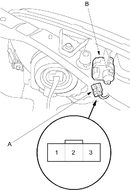

- Disconnect the 3P connector (A) from the headlight adjuster unit (B).

- Check for continuity between the No. 3 [No. 1] terminal and body ground.
Is there continuity?
YES – Go to step 3.
NO – Check for these problems: 
- Repair open in the BLK wire between the headlight adjuster unit and body ground.
- Poor ground (G201, G301).
- Check for voltage between the No. 1 [No. 3] terminal and body ground.
Is there battery voltage?
YES – Go to step 4.
NO – Repair open in the YEL/GRN wire between the headlight adjuster unit and under - dash fuse/relay box.
- Using an ohmmeter, measure resistance between the No. 2 terminal and body ground in position 0 of the headlight adjuster switch.
Is there about 730 ohm?
YES – Check for frozen, stuck or improperly installed the headlight adjuster unit. If the mechanical check is OK, replace the headlight adjuster unit.
NO – Check for these problems:
- Poor ground (G501).
- An open in the BLU/BLK wire between the headlight adjuster unit and headlight adjuster switch.
- A faulty headlight adjuster switch.
[ ]: 5-door